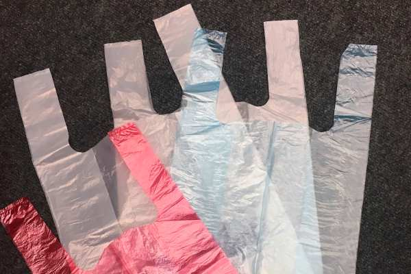
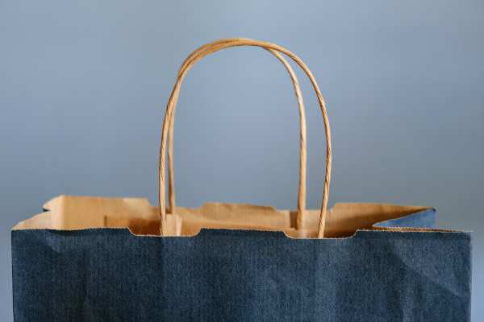
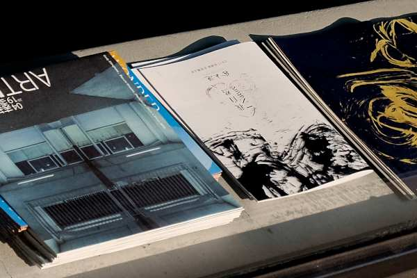

Biorazgradive polietilenske kese
Treger kese

Treger kese ili kako ih još nazivamo „tregerice”, napravljene su od polietilenske
folije, koje mogu biti visoke (HDPE) i niske (LDPE) gustine. Još uvek najčešće korišćene, ove
kese spadaju u reklamne, jer pogoduju promotivnom delu svake firme, preduzeća ili brenda.
Najčešće su korišćene, jer se proizvode u različitim dimenzijama, pa tako ispunjavaju
različite uslove. Kese se mogu isporučivati u paketima i na beskrajnoj rolni. Po dogovoru,
kese koje se izrađuju, mogu biti i različite debiljine i boje. Takođe, sve kese mogu biti
poručene sa štampom ili bez. U zavisnosti od želje klijenta, dimenzije i debljine kese, zavisi
i vrsta štampe, a najčešće vrste štampe koje se vrše jesu ofset i digitalna štampa. Ono što
nas posebno izdvaja od ostalih proizvođača jeste da su sve kese napravljene od kvalitetnog i
bioragradivog materijala, što znači da minimalno štete okolini koju mi čuvamo. Ono što najviše
zanima naše potencijalne saradnike jeste cena i uslovi isporuke ovih kesa. Kako bi obe strane
bile zadovoljene, našim klijentima se trudimo da izađemo u susret u svakom pogledu. Iz tog
razloga ne postoji jedinstveni cenovnik, već se trudimo da detalje postignemo dogovorom,
naravno u zavisnosti od vrste potražnje. Stoga cena veoma zavisi od dimenzija kesa, štampe i
količine. Standardne dimenzije koje najčešće isporučujemo su sledeće:
- 220 x 450 mm [2 g.]
- 250 x 500 mm [3 g.]
- 300 x 600 mm [6 g.]
- 400 x 800 mm [10 g.]
Minimalna količina za narudžbinu je 100 kg. Nakon poručivanja proizvoda isporuka se vrši
u roku od 5-7 radnih dana. Za sve ostale informacije možete nas kontaktirati u svakom trenutku.
Butik kese
Butik kese ili reklamne kese se proizvode od polietilenske folije visoke gustine. Iz tog
razloga,
butik kese garantuju kvalitet, čvrstinu i trajanje. Mogu biti sa ojačanom i banana ručkom. Kao što
i sam naziv kaže, ove kese pored svoje osnovne funkcije služe i u promotivne svrhe, odnosno
reklamiranje vašeg brenda, kompanije, firme i sl, pa pored toga što se koriste kao reklamni
material za kompanije i firme, koriste ih i butici, zlatare, radnje, supermarket itd. Kao i
treger, butik kese svojim dizajnom privlače pažnju, pa je iz tog razloga važno izabrati savršen
dizajn koji će služiti vašoj reklami i doprineti boljem uisku o vašoj firmi. U deo štampanog
dizajna, po dogovoru, štampamo u digitalnoj štampi vaš logo, adresu, broj telefona, sajt, e-mail
i sve ono što je korisno za vašu reklamu. Butik kese takođe nude mogućnost biranja dimenzije,
boje i debljine. Cena kao i za treger kese, zavisi od različitih faktora kao što su dimenzija,
debljina, štampa i sl. Kako bi bili sigurni da ćemo isporučiti pravi odnosno traženi proizvod,
postoje detalji koje dogovaramo sa klijentima, koje će doprineti obostranom zadovoljstvu.
Standardne dimenzije u kojima proizvodimo butik kese možete pronaći u sledećoj tabeli:
- 220 x 300 mm
- 250 x 420 mm
- 300 x 400 mm
- 350 x 450 mm
- 390 x 490 mm
- 450 x 580 mm
Minimalna količina za narudžbinu je 100 kg. Nakon poručivanja proizvoda isporuka se vrši u
roku od 5-7 radnih dana. Za sve ostale informacije možete nas kontaktirati u svakom trenutku.
Kese za zamrzivač
Kese za zamrzivač, mogu da se prave od materijala polietilena visoke ili niske gustine
(HDPE ili LDPE) i mogu biti šuškave ili glatke. Iako su smanjene debljine, ove kese imaju
odličnu čvrstinu i trajnost i najčešće se se isporučuju u paketima. Osnovna svrha im je
zaštita hrane i čuvanje njene svežine, kao i čuvanje dugotrajnosti. Ne sadrže štetne sastojke,
pa su iz tog razloga potpuno bezbedne za čuvanje prehrambenih proizvoda. Kod nas možete poručiti
kese u različitim dimenzijama, koje odgovaraju vašim potrebama.
Iako se najčešće koriste za pakovanje prehrambenih proizvoda, često se koriste i za
industrijske potrebe, šrafovske i druge proizvode, kao i za pakovanje robe široke potrošnje
manjih dimenzija. Isporučuju se u paketima. Minimalna količina za narudžbinu je 1 paket.
Cena kesa zavisi od gramaže i vrste kesa.
1 paket = 50 pakovanja = 2500 kesa za zamrzivač
Nakon poručivanja proizvoda isporuka se vrši u roku od 5-7 radnih dana. Za sve ostale informacije
možete nas kontaktirati.
Sintetički papir mesarac
Mesarski papir je proizvod koji ima primenu u mesarama i marketima za pakovanje prehrambenih
proizvoda. Služi za pakovanje i čuvanje mesa i mesnih proizvoda, ali i sireva, peciva, bureka i sl.
Sintetički mesarski papir je s jedne strane plastificiran, što znači da ne propušta masnoću i vlagu,
i vaše prehrabene proizvode čuva da ostanu sveži i dugotrajniji. Sa druge strane, mesarski papir je
izgrađen od papira visokog sjaja, što omogućuje visok kvalitet štampe sa vašim logom ili dizajnom po
želji koja će ispuniti očekivane standarde. Kao i za sve proizvode, važno je da štampa bude kvalitetna,
dugotrajna i uredna, jer doprinosi boljem izgled kako samog proizvoda tako i Brenda. Stoga je bitno da
dizajn zadovoljava kriterujume, koji zavise od samog proizvoda i materijala za štampu.
Naša standardna dimenzija u izradi sintetičkog mesarskog papira je 300 x 500 mm,
a minimalna količina za narudžbinu je 10 kg.
Cena zavisi od poručene količine kao i vrste štampe. Nakon poručivanja proizvoda isporuka
se vrši u roku od 5-7 radnih dana. Za sve ostale informacije možete nas kontaktirati i mi ćemo se
potruditi da rešimo vaše nedoumice. Uverite se u kvalitet i sačuvajte svežinu vaših proizvoda.
Papirne kese
Natron kese
Natron kese najčešće su izrađene od 40 g. rebrastog natron papira u prirodnoj boji (natron)
ili beloj boji, štampom sa raster valjcima koji nam omogućavaju vrhunsku štampu u flexo tehnici do
tri boje u jednom prolazu. Natron kese imaju široku primenu za pakovanje namirnica u pekarama,
fast food objektima, apotekama, ugostiteljskim objektima, prodavnicama zdrave hrane itd. Naše
reklamne natron kese su 100% biorazgradive pa samim tim minimalno zagađuju okolinu. Kao i za
ostale proizvode, i za natron kese postoji mogućnost izrade sa štampom i bez štampe, u zavisnoti
od želje klijenta. Proizvode se od nekoliko vrsta materijala, u širokom rasponu dimenzija. Uz naš
tim na čelu sa grafičkim dizajnerom, možete očekivati ili kreirati jedinstveni dizajn koji će
privući pažnju i ulepšati kese na jednostavan i prikladan način, jer pored svoje osnovne funkcije
pakovanja, natron kese se uveliko koriste za reklamu proizvoda, brenda, firme itd. Veoma je važan
izgled dizajna, jer svaki dizajn sa svojim izgledom, nosi sa sobom odgovornost, odnosno mogućnost
veće potrošnje proizvoda, pa samim tim i većeg prihoda. Kod nas možete dobiti vrhunski kvalitet
proizvoda i štampe sa velikim izborom dimenzija kesa, kako u braon tako i u beloj boji
natrona, kao i različitih debljina. Papirne kese proizvodimo u sledećim dimenzijama:
- 10 x 15 cm
- 10 x 21 cm
- 10 x 27 cm
- 10 x 31 cm
- 10 x 42 cm
- 11 x 15 cm
- 11 x 21 cm
- 11 x 27 cm
- 11 x 31 cm
- 11 x 42 cm
- 12 x 15 cm
- 12 x 21 cm
- 12 x 27 cm
- 12 x 31 cm
- 12 x 42 cm
- 14 x 15 cm
- 14 x 21 cm
- 14 x 27 cm
- 14 x 31 cm
- 14 x 42 cm
- 19 x 15 cm
- 19 x 21 cm
- 19 x 27 cm
- 19 x 31 cm
- 19 x 42 cm
- 24 x 15 cm
- 24 x 21 cm
- 24 x 27 cm
- 24 x 31 cm
- 24 x 42 cm
Pogledajte naš proizvodni program, a ukoliko u našoj standardnoj ponudi ne pronađete
odgovarajući tip papirnih kesa za vaše potrebe, obavezno nas kontaktirajte da zajedno pronađemo
najbolje rešenje za ambalažu od papira. Cena proizvoda, kao i za sve vrste kesa, zavisi od dimenzije
kao i vrste štampe.
Minimalna količina za narudžbinu je 50 kg. Nakon poručivanja proizvoda isporuka se vrši u roku
od 5-7 radnih dana. Za sve ostale informacije možete nas kontaktirati i mi ćemo se potruditi da
rešimo vaše nedoumice.
Papirne kese sa ručkom

Papirne kese sa ručkom se pretežno izrađuju od 40 g. rebrastog natron papira u prirodnoj boji
(natron) ili beloj boji, od standardnih veličina, do vrlo malih ili ekstremno velikih. Trenutno su
najtraženije dimenzije koje nudimo kao standardne:
45 x 37 cm
Papirne kese sa ručkom su reklamni materijal koji ima široku namenu. Koriste se kao kese za
prodavnice, butike, prodavnice zdrave hrane i gift šopove, ali i za velike trgovinske i hotelske
lance. Biorazgradive papirne kese, osim što čuvaju našu okolinu, idealne su za reklamne kampanje
i štampu logoa vaše firme. Karakteriše ih praktičnost, lakoća i izdržljivost. Pored svoje osnovne
namene, od svih vrsta kesa, papirne kese sa ručkom najbolje služe kao reklamni materijal, zbog
svoje idealne površine, koja je pogodna za svaku osmišljenu ideju štampe logoa, kontakta, adrese
i sl. Uz naš tim na čelu sa grafičkim dizajnerom, možete očekivati ili kreirati jedinstveni dizajn
koji će privući pažnju i ulepšati kese na jednostavan i prikladan način. Najpraktičnije su kako za
nošenje, tako i za promotivne svrhe, jer i bez štampe izgledaju jednostavno i praktično, dok im
štampa pruža jedinstveni izgled. Možemo vam ponuditi:
- Bele papirne kese sa ručkom
- Natron papirne kese sa ručkom
Minimalna količina za narudžbinu je 500 komada. Cena kesa zavisi od dimenzija
i vrste štampe. Nakon poručenog proizvoda isporuka se vrši od 5-7 radnih dana. Za sve ostale informacije
možete nas kontaktirati.
Kancelarijski materijal
Kancelarijski papir

Kancelarijski papir za sve vrste štampača i fotokopir aparata
različitih formata, boja (pastelne i intezivne), debljina (gramatura).
Različiti svetski proizvođači.
Koverte
Koverte su proizvod od papira koji služi kao ambalaža papirima i
dokumentaciji većih formata. Pored toga što skrivaju sadržinu pošiljke, odlične su
kao reklamni materijal, jer su čest vid komunikacije kako u opštoj tako i u poslovnoj
komunikaciji. Pored uznapredovale današnje digitalne tehnologije, koverte su uspele
da očuvaju svoju tradiciju u komunikaciji, pa su i dalje neizbežan korak pri slanju
dokumentacije od manje ili veće važnosti, iz tog razloga, koverta mora biti čista,
uredna, čitko adresirana, ali i prijatno dizajnirana. Kao i vizit karte, koverte mogu
služiti kao predemt koji će ostaviti prvi utisak na potencijalno klijenta, saradnika
i sl. Zato je veoma bitno, da ukoliko se klijent odluči da koverta bude dizajnirana,
to bude kulturan, jednostavan, ali upečatljiv dizajn, koji će davati informacije kao
što su naziv, kontakt i adresa pošaljioca.
Koverte se izrađuju u različitim dimenzijama, koje mogu biti sa ili bez prozora, na
levoj ili desnoj strani, sa i bez štampe, za automatsko insertovanje itd. Po želji
klijenta, koverte je moguće štampati i u punom koloru. Ukoliko se radi o standardnim
kovertama, svakako se najčešće štampaju ofset štampom. U zavisnosti od tiraža i
kolorita za štampanje koverata, može se koristiti i digitalna štampa. Nakon poručivanja
proizvoda isporuka se vrši od 5-7 radnih dana. Za sve ostale informacije možete nas
kontaktirati u svakom trenutku.
Tabuliri i obrasci
Računi, carinski obrasci na tabuliru, obrazac za penzije, memorandumi, otpremnice, tiketi za
kladionice, autobuske karte, dostavnice, beskonačni kompjuterski obrasci, svih standardnih
dimenzija i broja kopija. Od unikata do 6 kopija. Postoji mogućnost izrade vanstandardnih
dimenzija. Štampa do 6 boja.
- 120 x 12"
- 240 x 8"
- 240 x 12"
- 305 x 8"
- 321 x 8"
- 321 x 12"
- 380 x 12"
- 420 x 12"
Mehanografske koverte na tabuliru
PIN koverte za bankarske kartice, koverte za čekove, koverte za obračune zarada, isplatne
liste,
koverte srećke, specifikacije čekova…
Štampani materijal
Memorandumi
Memorandum je list papira, najčešće A4 formata, na kojem se nalaze osnovni podaci vašeg
preduzeća (logo i naziv firme, bankovni račun, PIB, matični broj, kontakt telefon, web sajt itd.). Memorandumi
su „lice” vaše firme, odnosno, oni vas prezentuju. Memorandumi spadaju u deo reklamnog materijala,
stoga daju prepoznatljivost vašoj firmi, i iz tog razloga svaka firma treba imati svoj memorandum radi
poslovne komunikacije. Memorandum se štampaju na papiru, u jednoj ili više boja, uglavnom jednostrano,
a po želji može biti i dvostrano odštampan. Štampa na memorandumu se najčešće vrši offset i digitalnom
štampom, u zavisnosti od tiraža. Kod nas možete izraditi memorandume za svoju firmu, koji će dodatno
govoriti o vašoj profesionalnosti, kreativnosti i entuzijazmu u poslovanju. Cena izrade memoranduma
zavisi od više faktora kao što su vrsta štampe, format, tiraž i sl. Nakon izrade, isporuka se vrši u
roku od 5-7 radnih dana. Za sve ostale informacije nas slobodno kontaktirajte i zatražite
savete za izradu najboljeg dizajna.
Vizit karte
Vizit karte su materijal koji ostavlja prvi utisak i daje obeležje
vašoj firmi ili preduzeću. Iako na prvi pogled izgledaju kao sitan i nebitan detalj,
pored prvog utiska, ostvaruju vezu sa vašim potencijalnim klijentom i značajne su u
poslovnoj komunikaciji. Vizit karta predstavlja brend i ostavlja utisak kao i vaša
pojava i daje ozbiljnost vašem poslovanju. Takođe služi kao vid reklame, gde pored
kontakt forme može sadržati i ilustracije i fotografije vaših ličnih radova. Dobro
osmišljena vizit karta ostaje u džepu vašeg potencijalnog klijenta, a vrlo verovatno
i bude podeljena dalje. Iz tog razloga, od velikog značaja jeste sam izgled vizit karte.
Zato je bitno izabrati vrstu papira i sam dizajn u kome vam naravno mogu pomoći članovi
našeg tima, sa ekspertima u dizajniranju reklamnog materijala.
Standarne veličine vizit karti su 90x50mm i 85x55mm, a sam izgled zavisi isključivo od vaše
želje ili naše ideje. Cena izrade visit karti zavisi od više faktora kao što su vrsta štampe,
format, tiraž i sl. Nakon izrade, isporuka se vrši u roku od 5-7 radnih dana. Za sve
informacije, možete nas u svakom trenutku pozvati, kako bismo vam olakšali izbor i odabrali
jedinstveni i upečatljiv dizajn, po kome ćete biti prepoznati.
Brošure

Brošure predstavljaju reklamni materijal većeg ili manjeg obima, od jedne pa sve do desetina
stranica. Manjeg su obima od kataloga, iako imaju sličnu svrhu, odnosno reklamu proizvoda i usluga
u štampanom obliku, specijalno dizajnirano prema želji klijenta. Obično se rade u punom koloru,
dvostrano, u formatu A4. Štampane brošure i dobar dizajn brošura su jedna od najboljih načina da
promovišete svoje poslovanje i dođete do novih klijenata. Izrada i dizajn brošure pružaju glavne
vezane za vaše proizvode kao i uvid u vašu kompaniju. Najčešće su tražene za firme, agencije,
ugostiteljske objekte itd. Grafički elementi potrebni za dizajn brošura uključuju logotip vaše firme,
grafikone, fotografije i razne grafičke oblike. Format, obiim, broj strana i štampa zavise od vaše
želje i ideje.
U svakom trenutku, na raspolaganju vam stoji naš tim, da zajedno doprinesemo što
savršenijem izgledu materijala koji će vas predstavljati na svakom ćošku. Cena izrade brošura
zavisi od više faktora kao što su obim, broj strana, format, tiraž i sl. Nakon izrade, isporuka se
vrši u roku od 5-7 radnih dana. Za sve ostale informacije nas slobodno kontaktirajte.
Katalozi
Katalog je komplet vaših proizvoda ili usluga na jednom mestu sa opisom i cenama. Služe za
oglašavanje i prodaju različitih proizvoda i usluga. Katalozi se uglavnom sastoje od više stranica,
kojim se prezentuju informacije o proizvodima i uslugama, sa ili bez cena. Katalog može uključiti i
tehničke informacije o proizvodima, uslugama, fotografije itd. Obim kataloga može biti od svega par
do desetina ili stotina strana. Katalozi se uglavnom štampaju na papiru formata A3 savijeni na A4.
Osim savijanja, uobičajen je i povez klamerom ili spiralom. Potrebu za katalozima izražavaju skoro
svaka proizvodnja, veleprodaja, trgovina, kozmetički saloni, galanterije, prodavnice tehničke robe i
još mnogi drugi.
Za svaki tip kataloga, za profesionalni izgled pobrinuće se naš tim, na čelu sa
grafičkim dizajnerom iskusnim u izradi svih vrsta reklamnog materijala, a ukoliko već imate svoju
ideju, dovoljno je samo da je iskažete i katalozi će biti izrađeni po vašoj želji. Cena izrade
kataloga zavisi od više faktora kao što su broj strana, format, tiraž i sl. Nakon izrade, isporuka
se vrši u roku od 5-7 radnih dana. Za sve ostale informacije nas slobodno kontaktirajte.
Flajeri i lifleti
Flajeri služe gotovo za sve tipove reklamiranja. Flajeri su pravi alat da usmerite
klijente na vas. Želite da ostavite reklamnu poruku, obavestite o uslugi koju pružate, ili da
objavite neki događaj, flajer je prvo sredstvo koje će vam u tome poslužiti. Ubacuju se u sandučiće,
šalju poštom, dele na ulici, u lokalima, tržnim centrima, kafićima, klubovima itd. U poređenju sa
drugim vrstama štampanog promotivnog materijala, flajeri i lifleti su jedna od najdostupnijih i
najčešćih vrsta reklamnog materijala na tržištu. Zbog pristupačne cene izrade, kratkih rokova
isporuke, flajeri su najpogodnije sredstvo reklamiranja. Jedan od uslova je i da štampa mora biti
vizualno primamljiva, kvalitetna i jasna. Ključnu ulogu će odigrati kvalitet otiska i pravi izbor
papira. Flajeri i lifleti se štampaju u raznim formatima i vrstama papira. Izbor papira, dizajn i
format su ključni činioci koji utiču na sam izgled flajera pa tako i njegovu efikasnost, od čega
zavisi utisak koji će ostaviti na klijenta. Dobro dizajniran flajer, privućiće pažnju i ostvatiti
svoju svrhu, bilo da je u pitanju reklama, prodaja, obaveštenje ili nešto drugo.
Dozvolite da vam pomognemo i da zajednički dođemo do optimalnog rešenja. Cena izrade
flajera i lifleta zavisi od više faktora kao što su vrsta štampe, format, tiraž i sl. Nakon izrade,
isporuka se vrši u roku od 5-7 radnih dana. Za sve ostale informacije nas slobodno kontaktirajte, a
mi ćemo se potruditi da vam pomognemo u odabiru najbolje moguće varijante za vaše potrebe.
Jelovnici i karte pića
Jelovnici su prvi materijal sa kojima se klijent susreće u vašem restoranu, baru, kafiću,
piceriji i
drugim ugostiteljskim objektima, i koji ostavlja prvi utisak i pre nego što se klijent sretne sa jelom
i pićem koje nudite. Iako se ne posmatra kao reklamni materijal, jelovnik to baš jeste, jer svojim
izgledom doprinosi utisku vašeg restorana/kafića, i daje mu jedinstveni pečat o načinu vašeg poslovanja
kao i u komunikaciji sa klijentima. Što meni ubedi klijenta da isproba više jela ili pića, veći je vaš
profit i promet, a to je ono čemu svi teže. Jelovnici se koriste i na venčanjima, žurkama, rođendanima i
drugim proslavama. Zato svaki jelovnik treba da bude čitko napisan, da sadrži podatke o jelu i piću,
gramaži, cenu i bude visoko kvalitetan. U zavisnosti od punude, jelovnik može biti manjeg obima pa sve
do nekoliko desetina strana. Ono što je najvažnije jeste da ne gubi svoju svrhu izabiranja jela ili pića,
pa je stoga poželjno da dizajn bude jednostavan i lep, kako ne bi odvlačio pažnju sa poručivanja.
Dizajn treba da sadrži vaš logo i kontakt formu, uz eventualnu pozadinsku grafiku. Štampanje jelovnika,
štampanje menija i štampanje karti pića se uglavnom vrši ofset štampom i digitalnom štampom. Često se
koristi laserska gravura kao i sito štampa kada su u pitanju specifični zahtevi.
Jelovnici se izrađuju u različitim veličinama, po želji klijenta. Cena izrade
jelovnika zavisi od više faktora kao što su vrsta štampe, format, tiraž i sl. Nakon izrade,
isporuka se vrši u roku od 5-7 radnih dana. Za sve informacije, možete nas u svakom trenutku
pozvati, kako bismo vam olakšali izbor i odabrali jedinstveni i upečatljiv dizajn, po kome ćete
biti prepoznati.
Promo materijal
Šolje
Reklamne ili promo šolje, jedan su od često korišćenog reklamnog materijala.
Šolje su praktični proizvod kada je u pitanju reklamna svrha, i iz razloga što su pogodne za
sve uzraste, prilike i okruženja. Svejedno da li se koriste za kafu, čaj, sok, ili bilo koje
drugo piće, pogodne su za razne prilike, pa eto i razloga da se što pre nađu na listi reklamnih
proizvoda vaše komapanije, jer se vrlo lako mogu naći u rukama pravog klijenta. Ono što je
takođe od velikog značaja i sigurno neće ostati nezapamćeno, jeste da vi lično poklonite šolju
u znak dobre trenutne ili buduće saradnje vas i vaših poslovnih partnera. U svakom slučaju, za
koji god vid promocije da se odlučite, kod nas na raspolaganju imate mogućnost da izaberete veoma
različite šolje, odnosno šolje različitih dimenzija, materijala i oblika. Sve vrste šolja imaju
mogućnost štampe, pa samim tim svojim izgledom doprineće i izgledu vašeg brenda. Preporučena
vrsta štampe zavisi od vrste šolja, ali često preporučene vrste štampe jesu tampon, sublimacija
i preslikač. Što se tiče samog izgleda šolje, prvo je potrebno da izaberete veličinu i oblik
šolje, u zavisnosti od njene svrhe, pa tako kod nas možete pronaći standardne šolje za kafu,
espresso, čaj, termo šolje koje čuvaju toplotu napitka, magične šolje koje obraduju svakog od
7-77, komplet šolje i druge. Kada je u pitanju materijal od kog se izrađuju, šolje mogu biti
keramičke, porcelanske i luminarc. U svakom slučaju, izaberite šolju po vašem ukusu, predložite
vašu ideju ili dopustite da je naš stručni tim dizajnira onako kako je najbolje za vas. Cena
izrade šolja zavisi od više faktora kao što su dimenzija, material, vrsta štampe, vrsta olovke,
tiraž i sl. Nakon izrade, isporuka se vrši u roku od 5-7 radnih dana. Za sve informacije, možete
nas u svakom trenutku pozvati, kako bismo vam olakšali izbor i odabrali savršen dizajn, po kome
ćete biti prepoznati.
Upaljači
Štampa na upaljačima je još jedan vid uspešnog reklamiranja, u svrhu što boljeg
prepoznavanja brenda. Standardni upaljači imaju dovoljno veliku površinu, na koju se mogu
odštampati sve neophodne informacije o preduzeću, kao što su kontakt, adresa, web sajt i email.
Štampom na upaljačima ostvaruje se opšta svrha, ali i svrha reklamiranja, gde upaljač može
poslužiti kao imitacija visit karte. Štampa na upaljaljačima je jeftino ulaganje, pa se
obostranom štampom postiže dupli efekat, odnosno veće privlačenje pažnje. Vrsta štampe može
biti sito, tampon i laserska gravura, što zavisi i od vrste upaljača. Kod nas možete pronaći
više vrsta upaljača kao što su plastični, metalni i zippo upljači. Zajedno sa odgovarajućim
dizajnom i savršenim kvalitetom, čine jedinstvenu ponudu kada je u pitanju reklama vašeg brenda,
bilo da je to malo, srednje ili veliko preduzeće. Upaljače koristimo i kao promotivne poklone,
poslovnim saradnicima i klijentima, koji svakodnevnim korišćenjem šire reklamu na svakom ćošku.
Kako upaljači imaju višenamensku funkciju, promotivni upaljači konstantno pokazuju veliki rast,
jer proizvođači dodavanjem jedinstvene reklame i uvođenjem inovacija u dizajnu sve više i više
prilagođavaju upaljače ostalim vrednim privatnim predmetima korisnika.
Cena izrade upaljača zavisi od više faktora kao što su vrsta štampe, format, tiraž
i sl. Nakon izrade, isporuka se vrši u roku od 5-7 radnih dana. Za sve informacije, možete
nas u svakom trenutku pozvati, kako bismo vam olakšali izbor i odabrali jedinstveni i upečatljiv
dizajn, po kome ćete biti prepoznati.
Olovke
Istorija pribora za pisanje, uglavnom olovaka i grafitnih olovaka, stara je hiljadama godina.
Olovke su, u različitim oblicima, prisutne od prve dinastije drevnog Egipta, dok su grafitne olovke
mnogo skorijeg datuma. Najčešće korišćen promotivni proizvod među svim korisnicima je olovka.
Hemijska ili grafitna, plastična, metalna ili touch, marker, olovka je postala deo našeg
svakodnevnog života. Koristimo je u različitim prilikama kako bi zapisali važne detalje i ideje,
proširimo znanja i u komunikaciji sa drugima. Postoje razne zanimljivosti vezane za olovke, a
jedna od njih je da u 95% slučajeva, ako se osobi pokloni olovka, prva stvar koju će njom napisati
je svoje ime. Na olovkama se mogu koristit različite tehnike štampe kao što su sito, tampon,
digitalna, laserska gravura i sve zo u zavisnosti od tipa olovke. Bez obzira na sam izgled olovke,
za koji može varirati od zanimljivih i dečijih do poslovnih i profesionalnih, važno je da olovka
bude kvalitetna, da ne pušta previse mastila, da lepo i čitko ostavlja tragove pisanja, da bude
prijatna za držanje i ne previse teška, kako bi bilo lakše rukovoditi njom. Svaka olovka ima
dovoljnu površinu da se na njoj odštampa logotip firme, pa čak i kontakt, kako bi kada se pokloni
klijentu ili saradniku služila i kao podsetnik na firmu od koje potiče.
Cena izrade olovki zavisi od više faktora kao što su vrsta štampe, vrsta olovke,
tiraž i sl. Nakon izrade, isporuka se vrši u roku od 5-7 radnih dana. Za sve informacije,
možete nas u svakom trenutku pozvati, kako bismo vam olakšali izbor i odabrali savršen dizajn,
po kome ćete biti prepoznati.
Rokovnici
Rokovnik, planer ili notes je knjižica u koju zapisujemo važne informacije, datume, brojeve
telefona. Proizvode se u različitim dimenzijama, pa ih je moguće svuda nositi sa sobom. Obično
su ukoričeni u mekanom materijalu ili koži. Mogu da sadrže informacije važne u poslovnom smislu,
kao što su putne karte, pozivni brojevi. Koriste se tokom cele godine kao kancelarijski material
ili promotivni poklon, koji može učvrstiti veze sa trenutnim i potencijalnim saradnicima. Iz toga
razloga se koriste kao reklama za brend, firmu, agenciju itd. Na njega se mogu uštampavati logotip,
adresa, web sajt i email. U zavisnosti od veličine i površine rokovnika, može se kreirati dizajn.
Ukoliko su korice deblje, kožne preporučuje se reljefna štampa, odnosno apliciranje logotipa,
dok se na rokovnicima sa spiralnim povezom i tanjim koricama, dizajn može raditi u punom koloru.
Takođe postoji mogućnost uštampavanja grafike koja će pratiti svaku stranu rokovnika. Naš tim je
u mogućnosti da osmisli potpuno jedinstvene i personalizovane rokovnike, koji će unaprediti vaše
poslovanje. Očekuje vas veliki izbor lepih i kvalitetnih rokovnika na jednom mestu, različitih
dimenzija. Izaberite idealan poklon za vaše poslovne partnere ili koristite rokovnik da sami
organizujte plan rada za narednu godinu. Naručite kod nas i po povoljnim cenama očekujte brzu
izradu uz vrhunski kvalitet. Nikada ne znate šta biste mogli da stvorite dok ne otvorite našu
pažljivo dizajniranu kolekciju notesa.
Cena izrade rokovnika zavisi od više faktora kao što su vrsta štampe, format, broj
stranica, tiraž i sl. Nakon izrade, isporuka se vrši u roku od 5-7 radnih dana.
Za sve informacije, možete nas u svakom trenutku pozvati, kako bismo vam olakšali izbor i odabrali
jedinstveni i upečatljiv dizajn, po kome ćete biti prepoznati.
Kalendari
Kalendari spadaju u promotivni program proizvoda. Zato je kalendar izuzetna reklama, koja će
vašim saradnicima biti pred očima 365 dana u godini. Kalendari su jeftini promotivni materijal,
koji u svakom trenutku pored svoje osnovne funkcije i ukrašavanja prostora, promoviše vaš brend
na veoma jednostavan način. U ponudi su mogućnost štampe i unikatni izgled kojim će vaš brend
ukrasiti svaki zid ili sto. Kalendari se izrađuju u više dimenzija i formata, uglavnom na
kunstdruk papiru, različite gramaže. Standardni način poveza je metalna spirala ili perforirani
listovi. Najčešća vrsta štampe je sito, a po potrebi može biti i digitalna. Kalendari variraju
od jednostavnih do onih koji su izrađeni u punom koloru radi jačeg i upečatljivijeg utiska. Na
svakom reklamnom kalendaru treba da stoje informacije koje sadrže logotip firme, kontakt,
adresu, e mail, web sajt i delatnost firme. Kalendari se mogu štampati sa različitim motivima
kao što su motivi prirode, automobile, praznika, životinja i sve što vam padne na pamet, na
jednom ili više listova. Na vama je da li će to biti zidni ili stoni calendar koji će tokom
cele godine ukrašavati nečiji zid ili radni sto. Ukoliko želite da se razlikujete od ostalih,
po vašoj želji možemo izraditi kalendar unikatnog izgleda, koji će predstavljati vaše proizvode,
a koji će osmisliti naš profesionalni tim sa grafičikm dizajnerom sa višegodišnjim iskustvom u
dizajniranju, ili sami izaberite izgled kalendara, a mi ćemo ga dizajnirati prema vašem ukusu.
U našoj ponudi je veliki izbor zidnih, stonih, poslovnih, jednodelnih i višedelnih kalendara,
zato ne propustite priliku već izaberite jedinstven dizajn.
Cena izrade kalendara zavisi od više faktora kao što su vrsta štampe, format,
tiraž i sl. Nakon izrade, isporuka se vrši u roku od 5-7 radnih dana. Za sve informacije, možete
nas u svakom trenutku pozvati, kako bismo vam olakšali izbor i odabrali jedinstveni i upečatljiv
dizajn, po kome ćete biti prepoznati.
Tekstil
Štampa na tekstilu danas veoma popularna, kako za reklamne kampanje, tako i za uniforme
zaposlenih
u različitim industrijama. Kod nas možete pronaći majice, dukseve, trenerke, prsluke, muškog i
ženskog kroja, različitog dizajna, različitih boja i veličina, koje pristaju svim pravilima
poslovnog dres koda. Reklamne uniforme visokog kvaliteta se koriste prvenstveno za uniformisanje
zaposlenih, pogodne su za sva godišnja doba, kao promotivni poklon partnerima, za velike kampanje,
manifestacije, sajmove. Tekstil je zbog svoje velike površine pogodan za više vrsta štampe, pa se
najčešće koriste sito štampa, koji je najkvalitetnije i najdugotrajnije rešenje, zatim preslikač
koji se preporučuje se za promotivne svrhe, poklone i kratkotrajna dešavanja, a zatim flex štampa
koja je takođe dugotrajna, a pogodna je i za izražajne aplikacije. Svakako, sve vrste tekstila
koje na sebi sadrže poruku, logotip i sve ono što treba, nose takođe reklamu koja je vidljiva i
koja će vas učiniti jos prepoznatljivijim. Za koji god tip reklame da se odlučite, mi ćemo vam
pomoći da napravite pravi odabir, ali i savršen dizajn koji će ostati upmćen na način koji vi
želite. Cena štampe na tekstilu zavisi od više faktora kao što su vrsta štampe, vrsta tekstila,
tiraž i sl. Nakon izrade, isporuka se vrši u roku od 5-7 radnih dana. Za sve informacije,
možete nas u svakom trenutku pozvati, kako bismo vam olakšali izbor i odabrali savršen dizajn,
po kome ćete biti prepoznati.